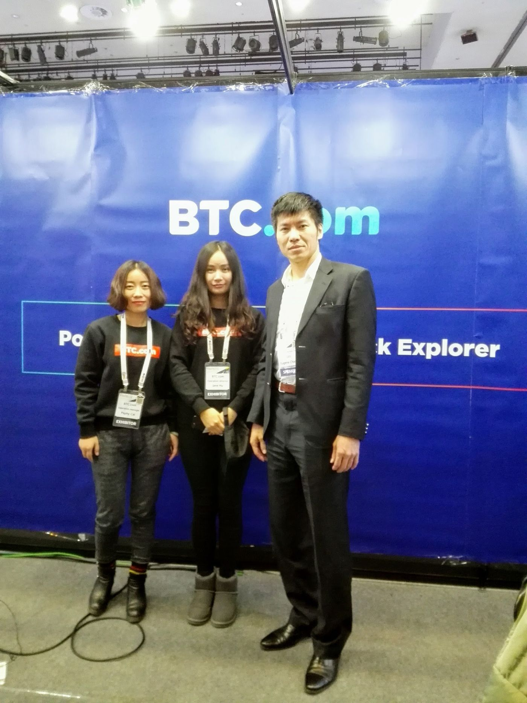

Fintech and blockchain
From stages to sandboxes: make it industry.
English text is not ready yet; showing Traditional Chinese.

2017 年我在首爾 Fintech 演講，第一天幾乎是唯一未租攤位的主講者。他們對我們在區塊鏈上的開發很有興趣——技術興趣的背後是產業焦慮與機會。
東南亞 ICO 與虛擬貨幣市場常與詐騙共存，因為合法投資管道少。邏輯是：你若能做得比別人更高級、優雅，為何不去做那些血腥低級的事正在吸金的市場？
台灣可用沙盒試點虛擬資產管理：保管、孳息、抵押放款與投資保證等。傳統金融難在短時間贏過上海香港新加坡，虛擬資產反而是窗口。
區塊鏈去掉中間人的承諾，要用在真實流程：清結算、身分、合約、監理報告——不是只在幣價K線。
工程師國家若只會製造硬體，會把軟體與金融協議的未來讓給別人。實作，是唯一的護城河。

Source: Taiwan's Great Future — Switzerland Today, Taiwan Tomorrow — Eugene Chang · 4. Industry, finance, insurance & health · 7. Blockchain, elections & governance